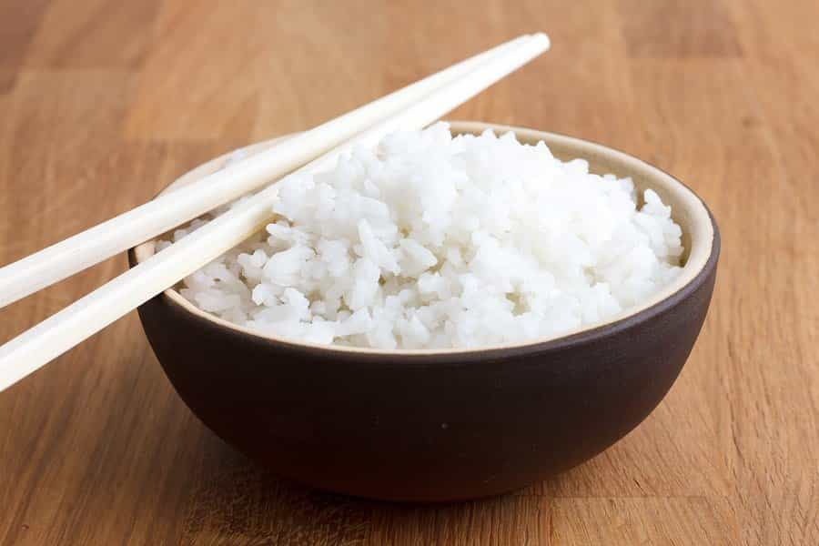

Charlie is a young man trying to develop his masculine side. He likes riding his bike, working out, and reading nonfiction.


So, you’ve heard about all the benefits of a keto diet, and you want to make the switch. Should you just go all in and drop all your carbs? Not so fast. If you happen to have diabetes, or if you’re insulin insensitive, you could send yourself into ketoacidosis (the evil twin of ketosis).
Nobody should 0 to 100 with this diet. You need to work your way up to nutritional ketosis. So here are three tips to help you get into ketosis. Medical Disclaimer: I am not a doctor and my knowledge are from personal experiences and research. Make sure you do your own research before making any changes.

This has no place in a healthy diet
This is the step that gets the ball rolling. No Beer. No Soda. No Juice. Zero liquid calories (diet soda is okay). I did this by accident because I couldn’t drink any soda with braces on my teeth. When I noticed how good I felt, I stuck with it. Drink only water, black coffee, and club soda. Quitting soda alone would cut 5,425 grams of sugar a year (that’s only average). Just cutting this out of your diet will guarantee better health and weight loss.
If you’re overweight, this also includes protein shakes. While I have nothing against protein shakes, they make it harder to lose weight. When you drink all those high glycemic calories, you send your insulin levels through the roof. When that happens, your body will store whatever calories come in as fat (insulins not evil, that’s just its job). You can cut these items out slowly, going down each week or every few days until you hit zero.

No Soy Here
The paleo diet is a great bridge for the keto diet and is just a great diet in general. The main thing that makes the paleo diet so great is the it eliminates unnatural foods from your diet. The human body does not know what to do with a lot of modern “foods”. As a result, we now have terrible levels of obesity and various diet related diseases. Cavemen didn’t have to worry about obesity and diabetes. They also didn’t eat soy foods and mystery meats. That’s why paleo helps with some of these problems.
It’s important that you get the best quality food you can afford. Commercial meat and eggs have a different nutrition profile compare to the grass-fed and free-range stuff, and you’ll want to avoid pesticides on normal veggies (rhere’s some things you can get away with).
If you can’t afford quality beef and chicken, get the lean stuff and buy healthy fats like olive or coconut oil, raw nuts and seeds, and raw dairy from grass-fed cows. You do this to avoid all the bad stuff commercial fat holds. Don’t eat soy or vegetable fats like corn or canola oil. Those are fats that humans haven’t adapted to, and they weren’t made with humans in mind in the first place. A good rule of thumb is to stick to shopping on the outside aisles. The outside usually hold all the meat, dairy, and produce, which will make up the bulk of your diet.

Now that you’ve gotten your diet under control, it’s time to cut out the carbs. This basically means the only carbs you’ll be taking in will come from leafy green veggies and berries. The goal for most people is 20 grams of carbs or less, but if you’re younger and more active you can go a bit higher (up to 50 grams is what is usually suggested).
Carbs help you hold water, so when you cut them, you will have to drink a lot more water. You will also pee a lot more, so keeping your electrolytes balanced will be key. Its best to get your sodium from pink salt and eat more foods high in potassium. Also consider taking a good magnesium supplement.
You’ll also have to up your fat intake by a lot. Getting them to 70-80% of your calories from fat is a good place to start. If you like dairy, make sure you get grass fed, raw dairy. Raw dairy contains a lot of good bacteria that helps with gut health and digesting lactose. Dairy that comes from commercial cows is full of hormones that shouldn’t be there, so avoid it.
Go Raw
Also note that milk still has carbs, so don’t overdo it. Same thing with seeds and nuts. I recommend that you get a cheap scale, so you can make sure you don’t take in too many carbs.
You don’t need to eat a ton of protein either. You will need a bit more if you are active, but fats are the priority.
When switching from carbs to fat as a fuel source, you may go through something called keto flu (not an actual flu). When I got it, I had muscle cramps, gas, and fatigue. Fight through it. After you adapt, you will get all the benefits that you hear people talking about.
Fat gives you more energy per gram (7 vs 4) so you end up needing to eat less overall. Fat will also keep you satisfied for longer. Don’t be surprised if you can go for a whole day without eating. It makes things a lot more convenient for you too. Less meal prep means more time to do other stuff. This makes it easy to make this a part of your daily life.
To make sure you are doing it right, use a keto calculator. The number you get won’t be exactly what you need, but it will be a good start.
Some Good Fats
This is one of the best diets out there in my opinion. Ever since I’ve started it two years ago, I’ve had increase cognitive function, increase testosterone, clear skin, and all sorts of other health benefits. It’s like light and day compared to the old me.
I was angry when I found out that the food guide lines have been so wrong. According to the guidelines, I should drop dead in the very near future. People look at me like I’m crazy when I eat sticks of butter and cheese as a snack, but then they go and eat a whole pizza with soda and cake. They blame my good results on my genes when that’s just not the case. They stick to an old system that is clearly not working, and that’s a shame.
Read More: Fat Does Not Make You Fat